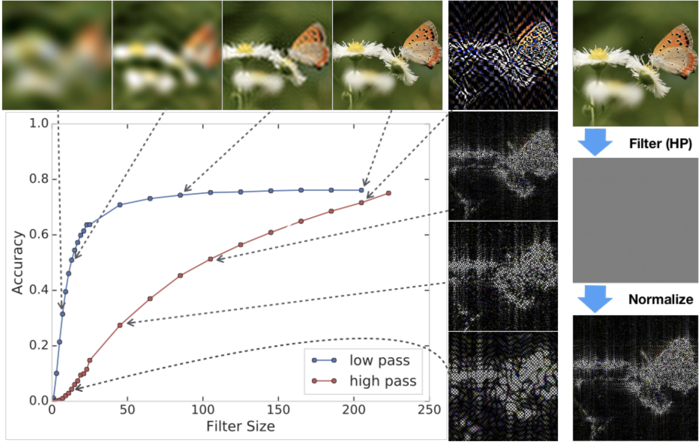
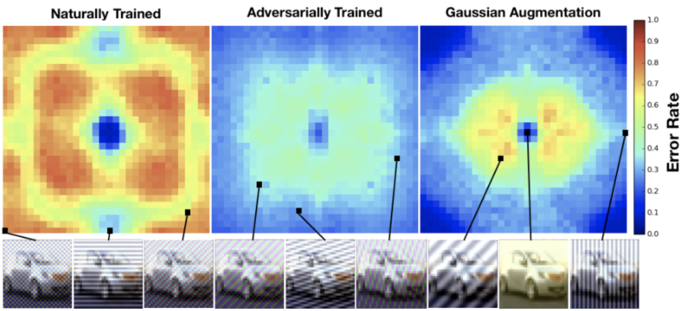

This article is part of a discussion of Ilyas et al. paper
"Adversarial examples are not bugs, they are features".
You can learn more in the
main discussion article
.
The hypothesis in Ilyas et. al. is a special case of a more general principle that is well accepted in the
distributional robustness literature—models lack robustness to distribution shift because they latch onto
superficial correlations in the data. Naturally, the same principle also explains adversarial examples
because they arise from a worst-case analysis of distribution shift. To obtain a more complete understanding
of robustness, adversarial example researchers should connect their work to the more general problem of
distributional robustness rather than remaining solely fixated on small gradient perturbations.
Detailed Response
The main hypothesis in Ilyas et al. (2019) happens to be a special case of a more general principle that is
commonly accepted in the robustness to distributional shift literature : a model's lack of
robustness is largely because the model latches onto superficial statistics in the data. In the image
domain, these statistics may be unused by—and unintuitive to—humans, yet they may be useful for
generalization in i.i.d. settings. Separate experiments eschewing gradient perturbations and studying
robustness beyond adversarial perturbations show similar results. For example, a recent work
demonstrates that models can generalize to the test examples by learning from high-frequency information
that is both naturally occurring and also inconspicuous. Concretely, models were trained and tested with an
extreme high-pass filter applied to the data. The resulting high-frequency features appear completely
grayscale to humans, yet models are able to achieve 50% top-1 accuracy on ImageNet-1K solely from these
natural features that usually are "invisible." These hard-to-notice features can be made conspicuous by
normalizing the filtered image to have unit variance pixel statistics in the figure below.

1
Models can achieve high accuracy using information from the input that would be unrecognizable
to humans. Shown above are models trained and tested with aggressive high and low pass filtering applied
to the inputs. With aggressive low-pass filtering, the model is still above 30% on ImageNet when the
images appear to be simple globs of color. In the case of high-pass (HP) filtering, models can achieve
above 50% accuracy using features in the input that are nearly invisible to humans. As shown on the
right hand side, the high pass filtered images needed be normalized in order to properly visualize the
high frequency features.
Given the plethora of useful correlations that exist in natural data, we should expect that our models will
learn to exploit them. However, models relying on superficial statistics can poorly generalize should these
same statistics become corrupted after deployment. To obtain a more complete understanding of model
robustness, measured test error after perturbing every image in the test set by a
Fourier basis vector,
as shown in Figure 2. The naturally trained model is robust to low-frequency perturbations, but,
interestingly, lacks robustness in the mid to high frequencies. In contrast, adversarial training improves
robustness to mid- and high-frequency perturbations, while sacrificing performance on low frequency
perturbations. For instance adversarial training degrades performance on the low-frequency fog corruption
from 85.7% to 55.3%. Adversarial training similarly degrades robustness to
contrast and low-pass
filtered noise. By taking a broader view of robustness beyond tiny $\ell_p$ norm perturbations, we discover
that adversarially trained models are actually not "robust." They are instead biased towards different kinds
of superficial statistics. As a result, adversarial training can sacrifice robustness in real-world
settings.

2
Model sensitivity to additive noise aligned with different Fourier basis vectors on CIFAR-10.
We fix the additive noise to have $\ell_2$ norm 4 and evaluate three models: a naturally trained model,
an
adversarially trained model, and a model trained with Gaussian data augmentation. Error rates are
averaged over 1000 randomly sampled images from the test set. In the bottom row we show images perturbed
with noise along the corresponding Fourier basis vector. The naturally trained model is highly sensitive
to additive noise in all but the lowest frequencies. Both adversarial training and Gaussian data
augmentation dramatically improve robustness in the higher frequencies while sacrificing the robustness
of the naturally trained model in the lowest frequencies (i.e. in both models, blue area in the middle
is smaller compared to that of the naturally trained model).
How, then, can the research community create models that robustly generalize in the real world, given that
adversarial training can harm robustness to distributional shift? To do so, the research community must take
a broader view of robustness and accept that $\ell_p$ adversarial robustness is highly limited and mostly
detached from security and real-world robustness . While often thought an
idiosyncratic quirk of deep
neural network classifiers, adversarial examples are not a counterintuitive mystery plaguing otherwise
superhuman classifiers. Instead, adversarial examples are in fact expected of models which lack robustness
to noise . They should not be surprising given the brittleness observed in
numerous synthetic—and even
natural —conditions. Models reliably exhibit poor performance when they are
evaluated on distributions
slightly different from the training distribution. For all that, current benchmarks do not expose these
failure modes. The upshot is that we need to design harder and more diverse test sets, and we should not
continue to be singularly fixated on studying specific gradient perturbations. As we move forward in
robustness research, we should focus on the various ways in which models are fragile, and design more
comprehensive benchmarks accordingly . As long as models lack
robustness to
distributional shift, there will always be errors to find adversarially.
Response Summary: The demonstration of models that learn from
high-frequency components of the data is interesting and nicely aligns with our
findings. Now, even though susceptibility to noise could indeed arise from
non-robust useful features, this kind of brittleness (akin to adversarial examples)
of ML models has been so far predominantly viewed as a consequence of model
“bugs” that will be eliminated by “better” models. Finally, we agree that our
models need to be robust to a much broader set of perturbations—expanding the
set of relevant perturbations will help identify even more non-robust features
and further distill the useful features we actually want our models to rely on.
Response: The fact that models can learn to classify correctly based
purely on the high-frequency component of the training set is neat! This nicely
complements one of our takeaways: models
will rely on useful features even if these features appear incomprehensible to humans.
Also, while non-robustness to noise can be an indicator of models using
non-robust useful features, this is not how the phenomenon was predominantly viewed.
More often than not, the brittleness of ML models to noise was instead regarded
as an innate shortcoming of the models, e.g., due to poor margins. (This view is
even more prevalent in the adversarial robustness community.) Thus, it was often
expected that progress towards "better"/”bug-free” models will lead to them
being more robust to noise and adversarial examples.
Finally, we fully agree that the set of $L_p$-bounded perturbations is a very
small subset of the perturbations we want our models to be robust to. Note,
however, that the focus of our work is human-alignment—to that end, we
demonstrate that models rely on features sensitive to patterns that are
imperceptible to humans. Thus, the existence of other families of
incomprehensible but useful features would provide even more support for our
thesis—identifying and characterizing such features is an interesting area for
future research.
This article is part of a discussion of Ilyas et al. paper "Adversarial examples are not bugs, they are features". You can learn more in the main discussion article .
Other Comments Comment by Ilyas et al.